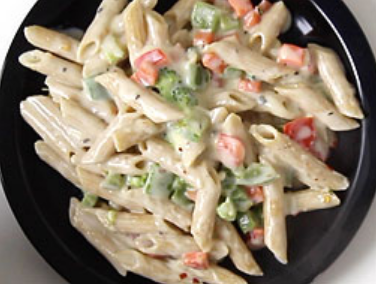

Back to Homepage
White Sauce Pasta Recipe
Tired of eating Red Tomato Pasta? Try this white sauce pasta!
With its silky smooth and aromatic sauce made from butter, milk
and all purpose flour (maida), it's a guaranteed way to delight
your taste buds. Similar to tomato pasta, white sauce pasta is
also extremely simple to make and takes only 15-17 minutes;
prepare lightly spiced aromatic fresh white sauce, stir-fry the
veggies, boil the pasta, and mix them all. Easy, isn't it?

Preparation Time: 7 minutes |
Cooking Time: 15 minutes |
Serves: 2 servings
Ingredients for Pasta
- 3/4 cup Penne Pasta
- 1/2 teaspoon salt
- 4-5 cups water
For Veggies:
- 1/2 teaspoon oil
- 1/4 cup chopped carrot
- 1/4 cup chopped Green Capsicum
- 1/4 cup chopped Red Capsicum
- 1/4 cup chopped brocolli
- salt to taste
For White Sauce:
- 1.5 tablespoon butter
- 1 teaspoon finely chopped garlic
- 1.5 tablespoon maida
- 1.5 cups milk
- 1/4 teaspoon dried oregano
- 1/4 teaspoon red chilli flakes
- a pinch of black pepper powder
- salt to taste
Steps To Cook:
- Boil raw pasta according to the instructions given on the package
or follow the following instructions; Take 4-5 cups water in deep
sauce pan, bring it to a boil over medium flame. When it starts
boiling, add 3/4 cup Penne pasta and 1/2 teaspoon salt.
-
Boil them until al-dante (cooked but not very soft). It
will take around 10-12 minutes. To check whether pasta is
cooked or not, take one pasta in a fork and bite it. If it is
little firm to bite, it is cooked. If it is too hard to bite, it
requires more cooking.
-
Transfer cooked pasta to a larger colander and drain excess water.
-
While Pasta is cooking, heat 1/2 teaspoon oil in a pan or kadai
over high flame. Add 1/4 cup chopped carrot, 1/4 cup chopped green
capsicum, 1/4 cup chooped red capsicum, 1/4 cup chopped brocolli
and salt.
-
Stir and cook until veggies are little cooked but still crunchy,
for around 2-3 minutes. Turn off the flame and transfer them to a
plate.
-
Heat 1.5 tablespoons butter in the same pan or kadai over medium flame.
Add 1/2 teaspoon finely chopped garlic and saute for 30 seconds.
- Add 1.5 tablespoons maida (all purpose flour).
-
Stir continuously and cook for a minute.
-
pour 1.5 cups milk little by little while stirring continuously
with a whisk.
-
Stir and mix for 1-2 minutes.
-
Reduce flame to low. Conitnue stirring and cooking until mixture
starts to thicken. It will take around 4-5 minutes depending on the
size and thickness of the pan. When the mixture starts to coat the
back of a spoon as shown in the picture here, it means that it has
started to thicken.
-
Add 1/4 teaspoon oregano, 1/4 teaspoon red chilli flakes, a pinch of
black pepper powder and salt.
-
Mix well.
- Add sauteed vegetables and pasta.
-
Turn of the flame. Mix well.
-
Transfer it to a serving plate. White sauce pasta is ready. Garnish it
with grated cheese and serve while they are still hot.
Back to Homepage